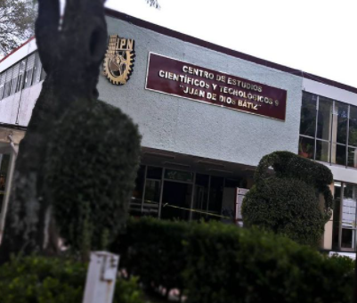

Formación
| Escuela | Nombre | Aprendizajes obtenidos |
|---|---|---|
| Primaria | Escuela primaria Quilaztli | Conocimientos básicos sobre ciencia |
| Secundaria | Escuela Secundaria General #31 "Dr. Alfonso Pruneda" | Conocimiento generales sobre ciencia, aquí tomé el taller de Dibujo arquitectonico durante un año y diseño de circuitos electricos durante 2 años de min estadía. |
| Media Superior | Centro de Estudios Cientificos y Tecnologicos #9 "Juan de Dios Bátiz" | Estudios de bachirato feneral sumados a los Conocimientos tecnicos de una carrera el CEcyT me permite estudiar programación. |